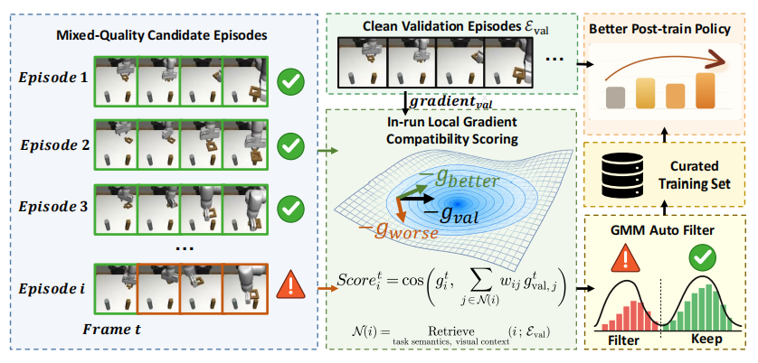
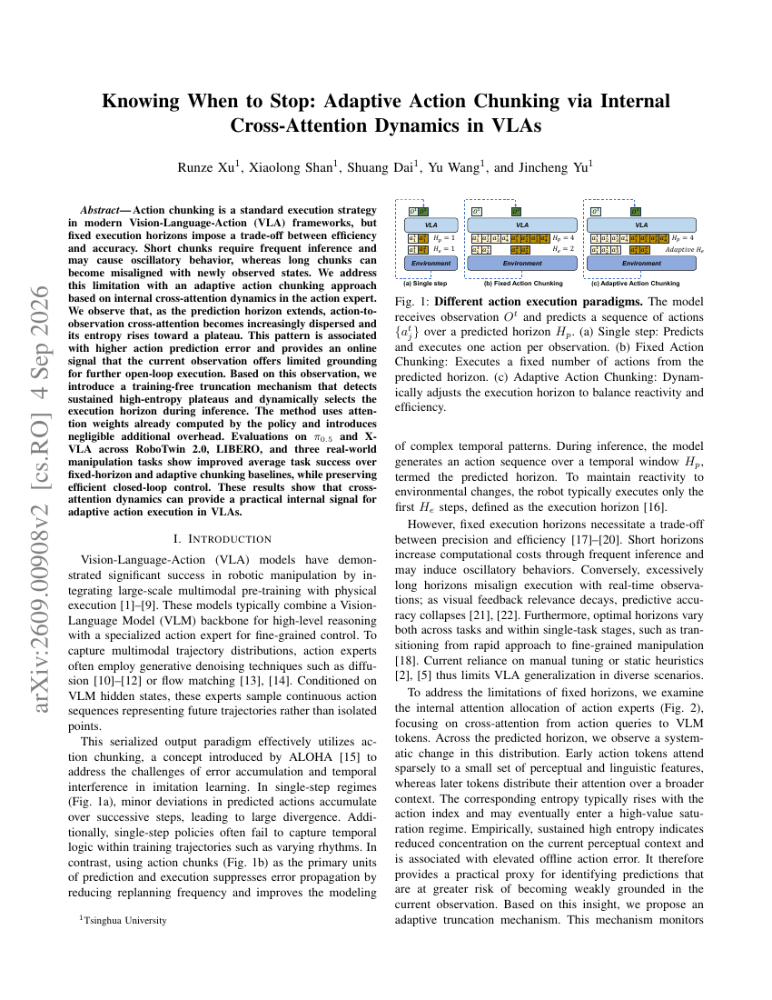
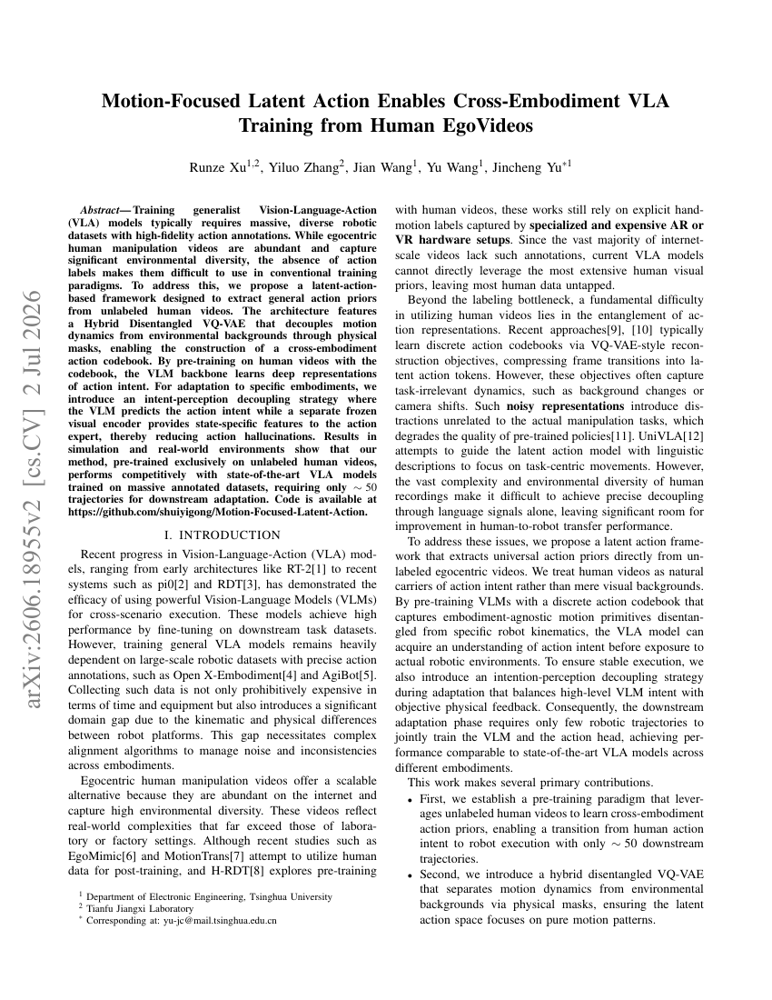
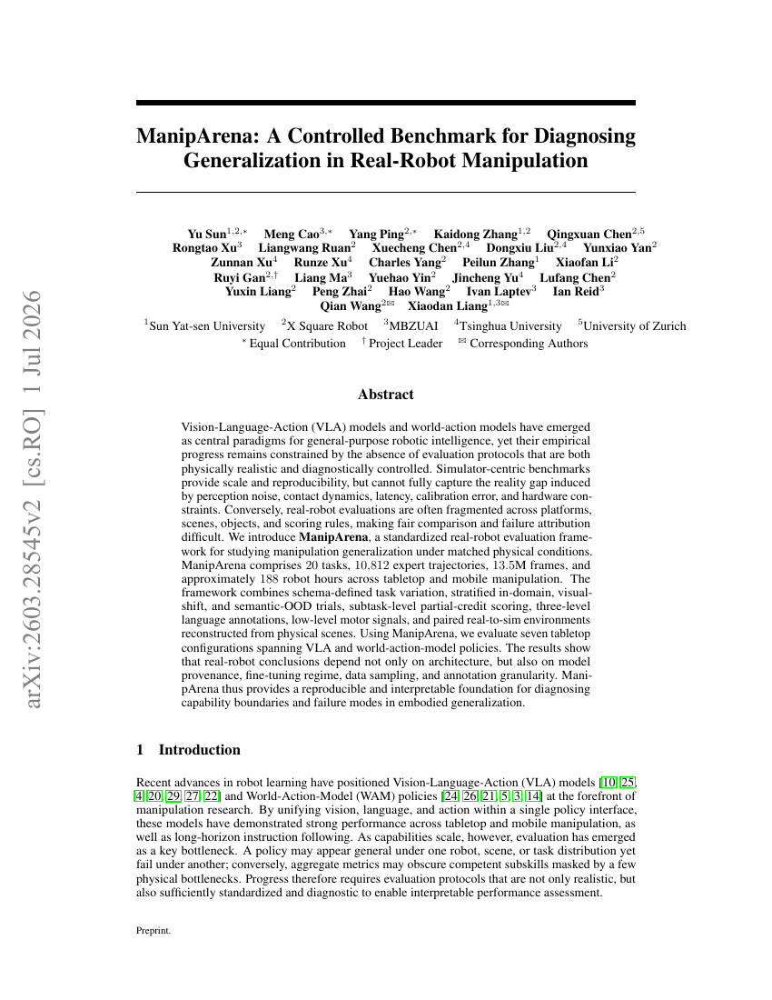
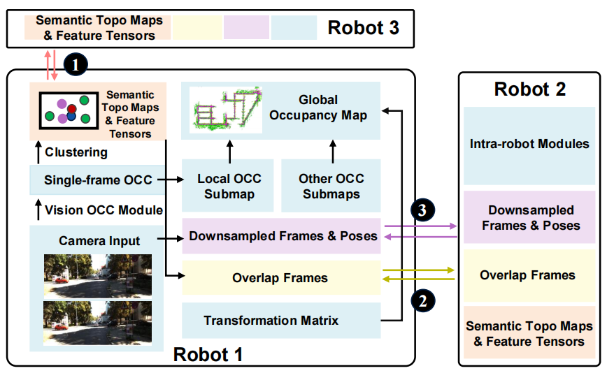
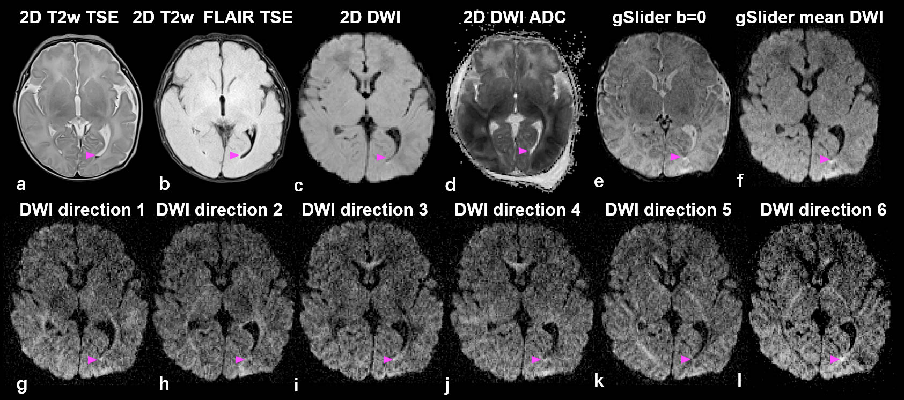

Robotics · Embodied Intelligence
Runze Xu
I am an M.Eng. student in Electronic Engineering at Tsinghua University,
advised by Prof. Yu Wang and Prof. Jincheng Yu in the Nanoscale Integrated Circuits and Systems Lab.
My research focuses on vision-language-action models, robot learning, and embodied intelligence.
I am particularly interested in data quality, adaptive action execution, and learning transferable behavior
from human videos.
02
Selected Publications
Selected work in robot learning, embodied intelligence, and medical imaging.

Runze Xu, Yuanfan Xu, Cuijie Xu, Shuang Dai, Yining Li, Yu Wang, Jincheng Yu
arXiv preprint, 2026
Identifies unreliable robot demonstrations through training-trajectory-aware gradient compatibility.
arXivPDF

Runze Xu, Xiaolong Shan, Shuang Dai, Yu Wang, Jincheng Yu
arXiv preprint, 2026
Uses cross-attention entropy to select execution horizons during inference with negligible overhead.
arXivPDF

Runze Xu, Yiluo Zhang, Jian Wang, Yu Wang, Jincheng Yu
IEEE/RSJ International Conference on Intelligent Robots and Systems (IROS), 2026
Learns transferable interaction dynamics from unlabeled human egocentric video.
arXivPDFCode

Yu Sun*, Meng Cao*, Ping Yang*, Rongtao Xu, Yunxiao Yan, Runze Xu, et al.
Technical Report, 2026
A standardized real-world benchmark with 20 tasks and more than 10,000 expert trajectories.
arXivProject pagePDF

Runze Xu, Min Xue, Jincheng Yu
25th International Conference on Control, Automation and Systems (ICCAS), 2025
DOI

Runze Xu, Yi Liao, Xijian Chen, Juncheng Zhu, Yan Sun, Haibo Qu
Annual Meeting of the International Society for Magnetic Resonance in Medicine (ISMRM), 2024
Abstract
06
Technical Skills
Python · PyTorch · TensorFlow · MATLAB · C/C++ · Verilog · MIPS · Assembly